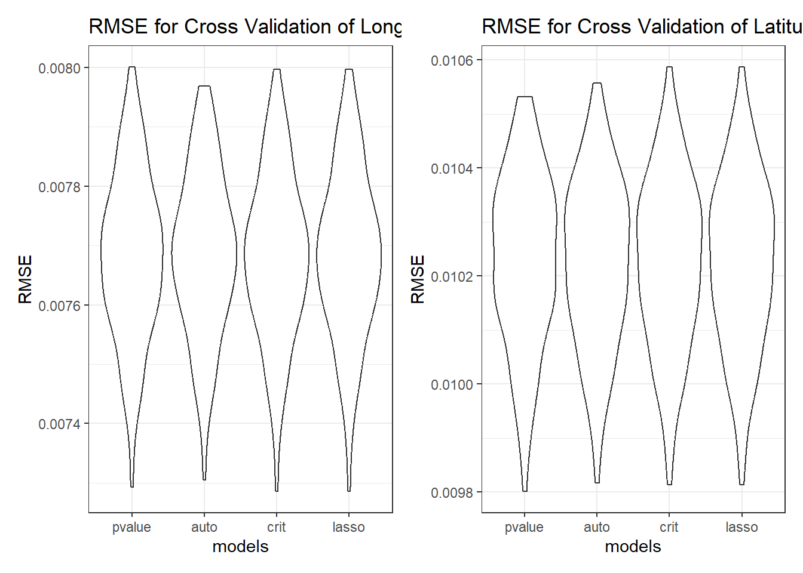
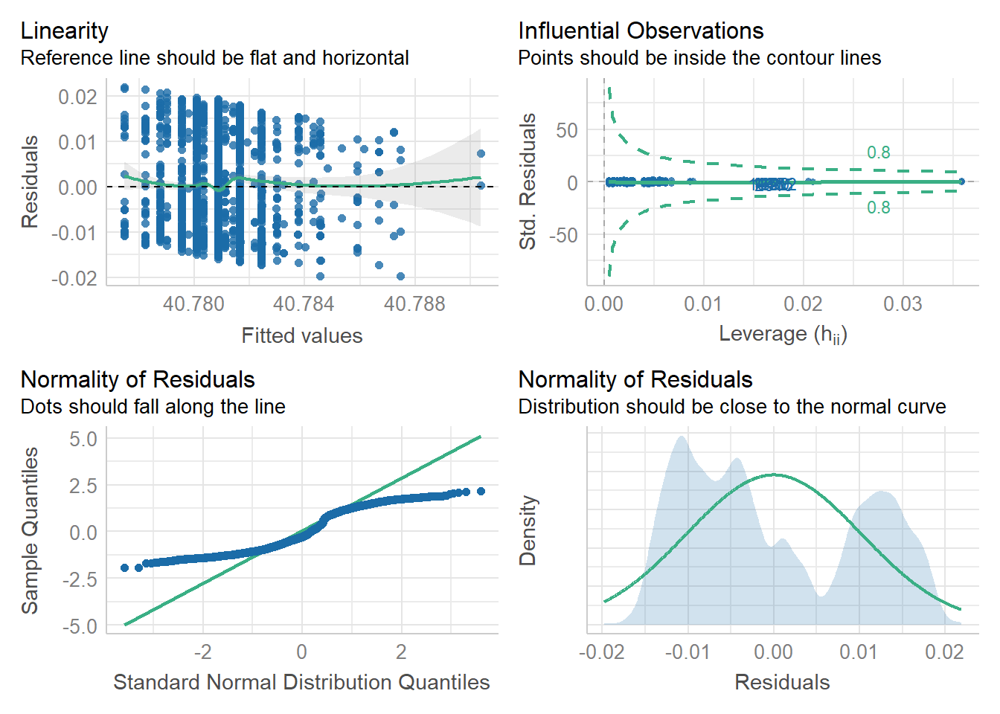

This will be model building procedure…
sq_df = read_csv('squirrel_tidy.csv') %>%
janitor::clean_names()The first step is to throw all the numerical variables into the model and check the p-value, the variables are shift + age + primary_fur_color + location + activity + reaction + sounds. Although hectare is also a numerical variable, it’s not included because the users of the model would not have the information of how many squirrels are there within a specific hectare, but they only have the information about the characteristics of specific squirrels that they want to look for. The variables with p-value less than 0.05 were removed from the model, and the model built with remaining variables was checked again to make sure that all of them had p-value less than 0.05. So, the first model candidate was produced with predictors being ‘shift’, ’ age’, ‘activity’, ‘reaction’, ‘sounds’.
# longitudinal/latitudinal function
# raw data input (no hectare information because the user would not know the info. about it)
long_model =
lm(long ~ shift + age + primary_fur_color + location + activity + reaction + sounds, data = sq_df)
summary(long_model)##
## Call:
## lm(formula = long ~ shift + age + primary_fur_color + location +
## activity + reaction + sounds, data = sq_df)
##
## Residuals:
## Min 1Q Median 3Q Max
## -0.015965 -0.005875 -0.001331 0.006604 0.019146
##
## Coefficients:
## Estimate Std. Error t value Pr(>|t|)
## (Intercept) -7.397e+01 8.390e-04 -88161.363 < 2e-16 ***
## shift 5.763e-04 2.831e-04 2.036 0.04187 *
## age -9.137e-04 3.676e-04 -2.486 0.01299 *
## primary_fur_color -5.253e-04 2.797e-04 -1.878 0.06053 .
## location 1.836e-04 3.008e-04 0.610 0.54165
## activity -2.371e-04 1.054e-04 -2.250 0.02454 *
## reaction 5.130e-04 1.691e-04 3.034 0.00243 **
## sounds 2.081e-03 4.895e-04 4.251 2.19e-05 ***
## ---
## Signif. codes: 0 '***' 0.001 '**' 0.01 '*' 0.05 '.' 0.1 ' ' 1
##
## Residual standard error: 0.007675 on 3015 degrees of freedom
## Multiple R-squared: 0.01547, Adjusted R-squared: 0.01319
## F-statistic: 6.768 on 7 and 3015 DF, p-value: 5.462e-08print(long_model)##
## Call:
## lm(formula = long ~ shift + age + primary_fur_color + location +
## activity + reaction + sounds, data = sq_df)
##
## Coefficients:
## (Intercept) shift age primary_fur_color
## -7.397e+01 5.763e-04 -9.137e-04 -5.253e-04
## location activity reaction sounds
## 1.836e-04 -2.371e-04 5.130e-04 2.081e-03lat_model =
lm(lat ~ shift + age + primary_fur_color + location + activity + reaction + sounds, data = sq_df)
summary(lat_model)##
## Call:
## lm(formula = lat ~ shift + age + primary_fur_color + location +
## activity + reaction + sounds, data = sq_df)
##
## Residuals:
## Min 1Q Median 3Q Max
## -0.019660 -0.008937 -0.002902 0.010291 0.021841
##
## Coefficients:
## Estimate Std. Error t value Pr(>|t|)
## (Intercept) 4.078e+01 1.116e-03 36541.411 < 2e-16 ***
## shift 6.023e-04 3.766e-04 1.599 0.109878
## age -7.666e-04 4.890e-04 -1.568 0.117052
## primary_fur_color -1.260e-03 3.721e-04 -3.385 0.000721 ***
## location -8.062e-05 4.001e-04 -0.201 0.840342
## activity -2.279e-04 1.402e-04 -1.626 0.104045
## reaction 7.655e-04 2.249e-04 3.404 0.000673 ***
## sounds 2.934e-03 6.512e-04 4.505 6.88e-06 ***
## ---
## Signif. codes: 0 '***' 0.001 '**' 0.01 '*' 0.05 '.' 0.1 ' ' 1
##
## Residual standard error: 0.01021 on 3015 degrees of freedom
## Multiple R-squared: 0.01692, Adjusted R-squared: 0.01464
## F-statistic: 7.413 on 7 and 3015 DF, p-value: 7.361e-09print(lat_model)##
## Call:
## lm(formula = lat ~ shift + age + primary_fur_color + location +
## activity + reaction + sounds, data = sq_df)
##
## Coefficients:
## (Intercept) shift age primary_fur_color
## 4.078e+01 6.023e-04 -7.666e-04 -1.260e-03
## location activity reaction sounds
## -8.062e-05 -2.279e-04 7.655e-04 2.934e-03# model selection using p-value
long_model1 =
lm(long ~ shift + age + activity + reaction + sounds, data = sq_df)
summary(long_model1)##
## Call:
## lm(formula = long ~ shift + age + activity + reaction + sounds,
## data = sq_df)
##
## Residuals:
## Min 1Q Median 3Q Max
## -0.015899 -0.005878 -0.001336 0.006651 0.018671
##
## Coefficients:
## Estimate Std. Error t value Pr(>|t|)
## (Intercept) -7.397e+01 6.978e-04 -1.060e+05 < 2e-16 ***
## shift 5.639e-04 2.817e-04 2.001e+00 0.04543 *
## age -9.412e-04 3.663e-04 -2.569e+00 0.01024 *
## activity -2.267e-04 1.031e-04 -2.200e+00 0.02787 *
## reaction 4.809e-04 1.681e-04 2.862e+00 0.00424 **
## sounds 2.142e-03 4.873e-04 4.396e+00 1.14e-05 ***
## ---
## Signif. codes: 0 '***' 0.001 '**' 0.01 '*' 0.05 '.' 0.1 ' ' 1
##
## Residual standard error: 0.007678 on 3017 degrees of freedom
## Multiple R-squared: 0.01419, Adjusted R-squared: 0.01255
## F-statistic: 8.684 on 5 and 3017 DF, p-value: 3.478e-08print(long_model1)##
## Call:
## lm(formula = long ~ shift + age + activity + reaction + sounds,
## data = sq_df)
##
## Coefficients:
## (Intercept) shift age activity reaction sounds
## -7.397e+01 5.639e-04 -9.412e-04 -2.267e-04 4.809e-04 2.142e-03lat_model1 =
lm(lat ~ primary_fur_color + reaction + sounds, data = sq_df)
summary(lat_model1)##
## Call:
## lm(formula = lat ~ primary_fur_color + reaction + sounds, data = sq_df)
##
## Residuals:
## Min 1Q Median 3Q Max
## -0.019726 -0.009004 -0.002850 0.010370 0.021857
##
## Coefficients:
## Estimate Std. Error t value Pr(>|t|)
## (Intercept) 40.7814005 0.0005212 78244.152 < 2e-16 ***
## primary_fur_color -0.0013140 0.0003716 -3.536 0.000412 ***
## reaction 0.0007784 0.0002234 3.484 0.000501 ***
## sounds 0.0029072 0.0006480 4.486 7.51e-06 ***
## ---
## Signif. codes: 0 '***' 0.001 '**' 0.01 '*' 0.05 '.' 0.1 ' ' 1
##
## Residual standard error: 0.01022 on 3019 degrees of freedom
## Multiple R-squared: 0.01405, Adjusted R-squared: 0.01307
## F-statistic: 14.34 on 3 and 3019 DF, p-value: 2.813e-09print(lat_model1)##
## Call:
## lm(formula = lat ~ primary_fur_color + reaction + sounds, data = sq_df)
##
## Coefficients:
## (Intercept) primary_fur_color reaction sounds
## 40.7814005 -0.0013140 0.0007784 0.0029072Then, we selected model using automatic procedure, specifically step-wise regression procedure. Backward, Forward or step-wise methods might produce different results, but we chose to use step-wise since it gives a single ‘best’ model. As the result, except for the location, all other 6 variables are included in this model, which is the second model candidate.
# model selection using automatic procedure (forward/backward)
model_stepwise_long <- lm(long ~ shift + age + primary_fur_color + location + activity + reaction + sounds, data = sq_df)
ols_step_both_p(model_stepwise_long)##
## Stepwise Selection Summary
## -------------------------------------------------------------------------------------------------
## Added/ Adj.
## Step Variable Removed R-Square R-Square C(p) AIC RMSE
## -------------------------------------------------------------------------------------------------
## 1 sounds addition 0.006 0.006 25.1010 -20836.6444 0.0077
## 2 reaction addition 0.009 0.008 18.6660 -20843.0326 0.0077
## 3 age addition 0.011 0.010 13.3070 -20848.3696 0.0077
## 4 activity addition 0.013 0.012 9.9410 -20851.7308 0.0077
## 5 shift addition 0.014 0.013 7.9330 -20853.7419 0.0077
## 6 primary_fur_color addition 0.015 0.013 6.3730 -20855.3088 0.0077
## -------------------------------------------------------------------------------------------------model_stepwise_lat <- lm(lat ~ shift + age + primary_fur_color + location + activity + reaction + sounds, data = sq_df)
ols_step_both_p(model_stepwise_lat)##
## Stepwise Selection Summary
## -------------------------------------------------------------------------------------------------
## Added/ Adj.
## Step Variable Removed R-Square R-Square C(p) AIC RMSE
## -------------------------------------------------------------------------------------------------
## 1 sounds addition 0.007 0.006 27.7780 -19108.7958 0.0103
## 2 primary_fur_color addition 0.010 0.009 18.9560 -19117.5522 0.0102
## 3 reaction addition 0.014 0.013 8.7970 -19127.6836 0.0102
## 4 activity addition 0.015 0.014 7.3460 -19129.1353 0.0102
## 5 shift addition 0.016 0.014 6.5490 -19129.9364 0.0102
## -------------------------------------------------------------------------------------------------Next, we used criterion-based procedure. The model with the largest adjusted R-square valued along with smallest AIC and BIC values are chosen to be the model candidate. It turned out that it also had all those 6 variables as the one in automatic procedure.
# model selection using criterion-based procedure
model_criterion_long = lm(long ~ shift + age + primary_fur_color + location + activity + reaction + sounds, data = sq_df)
ols_step_best_subset(model_criterion_long)## Best Subsets Regression
## ----------------------------------------------------------------------------
## Model Index Predictors
## ----------------------------------------------------------------------------
## 1 sounds
## 2 reaction sounds
## 3 age reaction sounds
## 4 age activity reaction sounds
## 5 shift age activity reaction sounds
## 6 shift age primary_fur_color activity reaction sounds
## 7 shift age primary_fur_color location activity reaction sounds
## ----------------------------------------------------------------------------
##
## Subsets Regression Summary
## ----------------------------------------------------------------------------------------------------------------------------------------
## Adj. Pred
## Model R-Square R-Square R-Square C(p) AIC SBIC SBC MSEP FPE HSP APC
## ----------------------------------------------------------------------------------------------------------------------------------------
## 1 0.0060 0.0056 0.0047 25.1007 -20836.6444 -29415.5745 -20818.6023 0.1794 1e-04 0.0000 0.9953
## 2 0.0087 0.0081 0.0068 18.6656 -20843.0326 -29421.9600 -20818.9766 0.1790 1e-04 0.0000 0.9932
## 3 0.0111 0.0101 0.0085 13.3068 -20848.3696 -29427.2860 -20818.2995 0.1786 1e-04 0.0000 0.9915
## 4 0.0129 0.0116 0.0096 9.9410 -20851.7308 -29430.6329 -20815.6467 0.1784 1e-04 0.0000 0.9904
## 5 0.0142 0.0126 0.0103 7.9325 -20853.7419 -29432.6281 -20811.6439 0.1782 1e-04 0.0000 0.9897
## 6 0.0153 0.0134 0.0108 6.3726 -20855.3088 -29434.1758 -20807.1967 0.1780 1e-04 0.0000 0.9892
## 7 0.0155 0.0132 0.0103 8.0000 -20853.6823 -29432.5423 -20799.5563 0.1781 1e-04 0.0000 0.9898
## ----------------------------------------------------------------------------------------------------------------------------------------
## AIC: Akaike Information Criteria
## SBIC: Sawa's Bayesian Information Criteria
## SBC: Schwarz Bayesian Criteria
## MSEP: Estimated error of prediction, assuming multivariate normality
## FPE: Final Prediction Error
## HSP: Hocking's Sp
## APC: Amemiya Prediction Criteriamodel_criterion_lat <- lm(lat ~ shift + age + primary_fur_color + location + activity + reaction + sounds, data = sq_df)
ols_step_best_subset(model_criterion_lat)## Best Subsets Regression
## ----------------------------------------------------------------------------
## Model Index Predictors
## ----------------------------------------------------------------------------
## 1 sounds
## 2 primary_fur_color sounds
## 3 primary_fur_color reaction sounds
## 4 primary_fur_color activity reaction sounds
## 5 shift primary_fur_color activity reaction sounds
## 6 shift age primary_fur_color activity reaction sounds
## 7 shift age primary_fur_color location activity reaction sounds
## ----------------------------------------------------------------------------
##
## Subsets Regression Summary
## ----------------------------------------------------------------------------------------------------------------------------------------
## Adj. Pred
## Model R-Square R-Square R-Square C(p) AIC SBIC SBC MSEP FPE HSP APC
## ----------------------------------------------------------------------------------------------------------------------------------------
## 1 0.0066 0.0062 0.0053 27.7776 -19108.7958 -27687.7295 -19090.7538 0.3178 1e-04 0.0000 0.9948
## 2 0.0101 0.0094 0.0081 18.9558 -19117.5522 -27696.4802 -19093.4962 0.3168 1e-04 0.0000 0.9919
## 3 0.0141 0.0131 0.0114 8.7968 -19127.6836 -27706.5881 -19097.6136 0.3156 1e-04 0.0000 0.9886
## 4 0.0152 0.0139 0.0119 7.3462 -19129.1353 -27708.0289 -19093.0513 0.3154 1e-04 0.0000 0.9881
## 5 0.0161 0.0145 0.0122 6.5488 -19129.9364 -27708.8171 -19087.8384 0.3152 1e-04 0.0000 0.9878
## 6 0.0169 0.0149 0.0124 6.0406 -19130.4502 -27709.3157 -19082.3382 0.3150 1e-04 0.0000 0.9877
## 7 0.0169 0.0146 0.0118 8.0000 -19128.4909 -27707.3509 -19074.3649 0.3151 1e-04 0.0000 0.9883
## ----------------------------------------------------------------------------------------------------------------------------------------
## AIC: Akaike Information Criteria
## SBIC: Sawa's Bayesian Information Criteria
## SBC: Schwarz Bayesian Criteria
## MSEP: Estimated error of prediction, assuming multivariate normality
## FPE: Final Prediction Error
## HSP: Hocking's Sp
## APC: Amemiya Prediction CriteriaLASSO model selection method was then used. After looking for the best lamda value, the third model candidate has all seven predictors, which means no variable was deleted from the selection procedure.
# model selection using LASSO procedure: longitude
y_long <- sq_df$long
# hist(y_long)
x <- sq_df %>%
dplyr::select(
shift, age, primary_fur_color,location, activity, reaction, sounds
) %>%
data.matrix()
set.seed(2022)
cv_model_long <- cv.glmnet(x,y_long, alpha = 1)
best_lambda_long <- cv_model_long$lambda.min
long_lasso <- glmnet(x, y_long, alpha = 1, lambda = best_lambda_long)
coef(long_lasso)## 8 x 1 sparse Matrix of class "dgCMatrix"
## s0
## (Intercept) -7.396680e+01
## shift 5.713470e-04
## age -9.081172e-04
## primary_fur_color -5.210497e-04
## location 1.768355e-04
## activity -2.351475e-04
## reaction 5.096738e-04
## sounds 2.073993e-03# model selection using LASSO procedure: latitude
y_lat <- sq_df$lat
# hist(y_lat)
x <- sq_df %>%
dplyr::select(
shift, age, primary_fur_color,location, activity, reaction, sounds
) %>%
data.matrix()
set.seed(2023)
cv_model_lat <- cv.glmnet(x,y_lat, alpha = 1)
best_lambda_lat <- cv_model_lat$lambda.min
lat_lasso <- glmnet(x, y_lat, alpha = 1, lambda = best_lambda_lat)
coef(lat_lasso)## 8 x 1 sparse Matrix of class "dgCMatrix"
## s0
## (Intercept) 40.7816933208
## shift 0.0004907211
## age -0.0006332138
## primary_fur_color -0.0011405094
## location .
## activity -0.0001948355
## reaction 0.0006874044
## sounds 0.0027034309We have four different models as the final ‘best’ model candidate for now, and they are all nested within each other. We choose the ‘best’ model according to 3 criteria, the adjusted R-squared value, the cross-validation outcome(i.e. RMSE) and the rule of parsimony.
The four different longitude-prediction model are as follows:
pvalue_fit_long = lm(long ~ shift + age + activity + reaction + sounds, data = sq_df)
auto_fit_long = lm(long ~ shift + hectare_squirrel_number + primary_fur_color + location + activity + reaction + sounds, data = sq_df)
crit_fit_long <- lm(long ~ hectare_squirrel_number + primary_fur_color + location + activity + reaction + sounds, data = sq_df)
lasso_fit_long = lm(long ~ shift + age + primary_fur_color + location + activity + reaction + sounds, data = sq_df)
# all longitudinal models
pvalue_fit_long = lm(long ~ shift + age + activity + reaction + sounds, data = sq_df)
pvalue_adjrsquared_long <- summary(pvalue_fit_long)$adj.r.squared
auto_fit_long = lm(long ~ sounds + primary_fur_color + reaction + activity + shift ,data = sq_df)
auto_adjrsquared_long <- summary(auto_fit_long)$adj.r.squared
crit_fit_long = lm(long ~ shift + age + primary_fur_color + activity + reaction + sounds, data = sq_df)
crit_adjrsquared_long <- summary(crit_fit_long)$adj.r.squared
lasso_fit_long = lm(long ~ shift + age + primary_fur_color + location + activity + reaction + sounds, data = sq_df)
lasso_adjrsquared_long <- summary(lasso_fit_long)$adj.r.squaredThe four different latitude-prediction model are as follows:
pvalue_fit_lat = lm(lat ~ primary_fur_color + reaction + sounds, data = sq_df)
auto_fit_lat = lm(lat ~ sounds + primary_fur_color + reaction + activity + shift ,data = sq_df)
crit_fit_lat = lm(lat ~ shift + age + primary_fur_color + activity + reaction + sounds, data = sq_df)
lasso_fit_lat = lm(lat ~ shift + age + primary_fur_color + activity + reaction + sounds, data = sq_df)
# all latitudinal models
pvalue_fit_lat = lm(lat ~ primary_fur_color + reaction + sounds, data = sq_df)
pvalue_adjrsquared_lat <- summary(pvalue_fit_lat)$adj.r.squared
auto_fit_lat = lm(lat ~ sounds + primary_fur_color + reaction + activity + shift ,data = sq_df)
auto_adjrsquared_lat <- summary(auto_fit_lat)$adj.r.squared
crit_fit_lat = lm(lat ~ shift + age + primary_fur_color + activity + reaction + sounds, data = sq_df)
crit_adjrsquared_lat <- summary(crit_fit_lat)$adj.r.squared
lasso_fit_lat = lm(lat ~ shift + age + primary_fur_color + activity + reaction + sounds, data = sq_df)
lasso_adjrsquared_lat <- summary(lasso_fit_lat)$adj.r.squaredThe cross-validation divides model into the training set and the testing set. Models’ comparison could be further done by comparing the cross-validation output: RMSE.
# training and testing sets
cv_df <- crossv_mc(sq_df, 100)
cv_df <- cv_df %>%
mutate(
train = map(train, as_tibble),
test = map(test, as_tibble)
)# longitudinal model selection
cv_df_long =
cv_df %>%
mutate(
pvalue_fit = map(train, ~lm(long ~ shift + age + activity + reaction + sounds, data = .x)),
auto_fit = map(train, ~lm(long ~ sounds + primary_fur_color + reaction + activity + shift ,data = .x)),
crit_fit = map(train, ~lm(long ~ shift + age + primary_fur_color + activity + reaction + sounds, data = .x)),
lasso_fit = map(train, ~lm(long ~ shift + age + primary_fur_color + location + activity + reaction + sounds, data = .x))
) %>%
mutate(
rmse_pvalue = map2_dbl(pvalue_fit, test, ~modelr::rmse(model = .x, data = .y)),
rmse_auto = map2_dbl(auto_fit, test, ~modelr::rmse(model = .x, data = .y)),
rmse_crit = map2_dbl(crit_fit, test, ~modelr::rmse(model = .x, data = .y)),
rmse_lasso = map2_dbl(lasso_fit, test, ~modelr::rmse(model = .x, data = .y))
)
# Comparing the RMSE plot
rplot_long <- cv_df_long %>%
dplyr::select(starts_with("rmse")) %>%
pivot_longer(
everything(),
names_to = "model",
values_to = "rmse",
names_prefix = "rmse_") %>%
mutate(model = fct_inorder(model)) %>%
ggplot(aes(x = model, y = rmse)) + geom_violin() +
labs(
title = 'RMSE for Cross Validation of Longitudinal Models',
x = 'models', y = 'RMSE'
)+
theme_bw()
# latitudinal model selection
cv_df_lat =
cv_df %>%
mutate(
pvalue_fit = map(train, ~lm(lat ~ primary_fur_color + reaction + sounds, data = .x)),
auto_fit = map(train, ~lm(lat ~ sounds + primary_fur_color + reaction + activity + shift ,data = .x)),
crit_fit = map(train, ~lm(lat ~ shift + age + primary_fur_color + activity + reaction + sounds, data = .x)),
lasso_fit = map(train, ~lm(lat ~ shift + age + primary_fur_color + activity + reaction + sounds, data = .x))
) %>%
mutate(
rmse_pvalue = map2_dbl(pvalue_fit, test, ~modelr::rmse(model = .x, data = .y)),
rmse_auto = map2_dbl(auto_fit, test, ~modelr::rmse(model = .x, data = .y)),
rmse_crit = map2_dbl(crit_fit, test, ~modelr::rmse(model = .x, data = .y)),
rmse_lasso = map2_dbl(lasso_fit, test, ~modelr::rmse(model = .x, data = .y))
)
# Comparing the RMSE plot
rplot_lat <- cv_df_lat %>%
dplyr::select(starts_with("rmse")) %>%
pivot_longer(
everything(),
names_to = "model",
values_to = "rmse",
names_prefix = "rmse_") %>%
mutate(model = fct_inorder(model)) %>%
ggplot(aes(x = model, y = rmse)) + geom_violin() +
labs(
title = 'RMSE for Cross Validation of Latitudinal Models',
x = 'models', y = 'RMSE'
)+
theme_bw()
rplot_long + rplot_lat
Visualization Tables are made for better comparison.
# RMSE and adj Rsquared comparison table
methods <- c('pvalue','automatic','criterion-based','LASSO')
#longitude: parsimony since the RMSE and Rsquared are similar
RMSE_long <-
cv_df_long %>%
dplyr::select(starts_with('rmse_')) %>%
map(median) %>%
unlist()
adjrsquared_long <- c(pvalue_adjrsquared_long,auto_adjrsquared_long,
crit_adjrsquared_long, lasso_adjrsquared_long)
long_comparison <- tibble(
methods,
RMSE_long,
adjrsquared_long
)
long_comparison %>% knitr::kable()| methods | RMSE_long | adjrsquared_long |
|---|---|---|
| pvalue | 0.0076781 | 0.0125531 |
| automatic | 0.0076892 | 0.0117514 |
| criterion-based | 0.0076840 | 0.0133905 |
| LASSO | 0.0076838 | 0.0131852 |
# latitude: parsimony since the RMSE and Rsquared are similar
RMSE_lat <-
cv_df_lat %>%
dplyr::select(starts_with('rmse_')) %>%
map(median) %>%
unlist()
adjrsquared_lat <- c(pvalue_adjrsquared_lat,auto_adjrsquared_lat,
crit_adjrsquared_lat, lasso_adjrsquared_lat)
lat_comparison <- tibble(
methods,
RMSE_lat,
adjrsquared_lat
)
lat_comparison %>% knitr::kable()| methods | RMSE_lat | adjrsquared_lat |
|---|---|---|
| pvalue | 0.0102359 | 0.0130708 |
| automatic | 0.0102351 | 0.0144571 |
| criterion-based | 0.0102291 | 0.0149498 |
| LASSO | 0.0102291 | 0.0149498 |
The function of longitudinal has 5 predictors (shift + age + activity + reaction + sounds). Since the RMSE values and adjusted R-squared are approximately same among all functions, the principal of parsimony tells us to choose the the most succinct model. The formula of the latitudinal function is: longitudinal = -73.97 + 0.0005639 shift - 0.0009412 age - 0.0002267 activity + 0.0004809 reaction + 0.002142 sounds.
# final model
long_model_final <-
lm(long ~ shift + age + activity + reaction + sounds, data = sq_df)
print(long_model_final)##
## Call:
## lm(formula = long ~ shift + age + activity + reaction + sounds,
## data = sq_df)
##
## Coefficients:
## (Intercept) shift age activity reaction sounds
## -7.397e+01 5.639e-04 -9.412e-04 -2.267e-04 4.809e-04 2.142e-03long_model_final %>% broom::tidy()## # A tibble: 6 × 5
## term estimate std.error statistic p.value
## <chr> <dbl> <dbl> <dbl> <dbl>
## 1 (Intercept) -74.0 0.000698 -105997. 0
## 2 shift 0.000564 0.000282 2.00 0.0454
## 3 age -0.000941 0.000366 -2.57 0.0102
## 4 activity -0.000227 0.000103 -2.20 0.0279
## 5 reaction 0.000481 0.000168 2.86 0.00424
## 6 sounds 0.00214 0.000487 4.40 0.0000114The diagnosis plots of the final longitudinal prediction model:
check_model(long_model_final, check = c("linearity", "outliers", "qq", "normality"))The function of latitudinal has 3 predictors (primary_fur_color + reaction + sounds). Since the RMSE values and adjusted R-squared are approximately same among all functions, the principal of parsimony tells us to choose the the most succinct model. The formula of the latitudinal function is: longitudinal = 40.7814005- 0.0013140 primary_fur_color + 0.0007784 reaction + 0.0029072 sounds.
lat_model_final <-
lm(lat ~ primary_fur_color + reaction + sounds, data = sq_df)
print(lat_model_final)##
## Call:
## lm(formula = lat ~ primary_fur_color + reaction + sounds, data = sq_df)
##
## Coefficients:
## (Intercept) primary_fur_color reaction sounds
## 40.7814005 -0.0013140 0.0007784 0.0029072lat_model_final %>% broom::tidy()## # A tibble: 4 × 5
## term estimate std.error statistic p.value
## <chr> <dbl> <dbl> <dbl> <dbl>
## 1 (Intercept) 40.8 0.000521 78244. 0
## 2 primary_fur_color -0.00131 0.000372 -3.54 0.000412
## 3 reaction 0.000778 0.000223 3.48 0.000501
## 4 sounds 0.00291 0.000648 4.49 0.00000751The diagnosis plots of the final latitudinal prediction model:
check_model(lat_model_final, check = c("linearity", "outliers", "qq", "normality"))